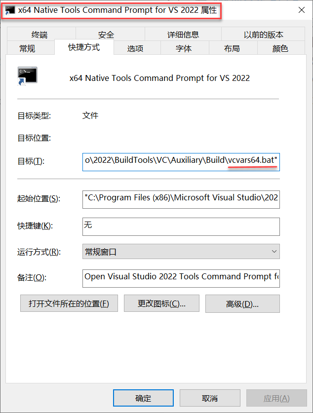

在 Windows 上创建“从此处打开 MSVC”右键菜单

在 《管理多套 Qt / C++ 构建、编译、运行环境的最佳实践》 一文中我们提到过：MSVC 的命令（如 cl.exe）不会加入 PATH 环境变量 。在命令行中使用 MSVC 编译项目只能通过打开一个“x64 Native Tools Command Prompt for VS 2022”命令行窗口执行相关命令，或者是在普通命令行窗口中先执行一下环境变量的初始化脚本 C:\Program Files (x86)\Microsoft Visual Studio\2022\BuildTools\Common7\Tools\VsDevCmd.bat，其实，“x64 Native Tools Command Prompt for VS 2022”这个命令行窗口本身只是一个快捷方式，它实际上也是新开一个 CMD 窗口，然后执行了 VsDevCmd.bat，这一点可以从它的“文件属性”上看出来：

不管是每次打开一个“x64 Native Tools Command Prompt for VS 2022”命令行窗口再 cd 到项目目录还是打开一个普通 CMD 窗口再手动执行 VsDevCmd.bat 都有一点麻烦。最好的做法是：修改注册表，在系统中添加一个右键菜单：“从此处打开 MSVC”，每次在项目根目录下右键单击该菜单，就可以直接进入 MSVC 环境编译项目了。具体方法是，准备一个文本文件，命名为 msvc here.reg ，内容入下（你可能需要根据你本地 VsDevCmd.bat 文件的路径调整 reg 文件中的路径）：

在 Windows 上创建“从此处打开 MSVC”右键菜单
https://laurence.enlightgram.com/qt/windows-context-menu-msvc/